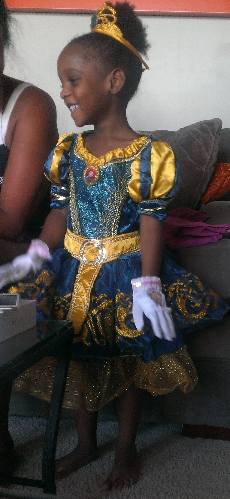
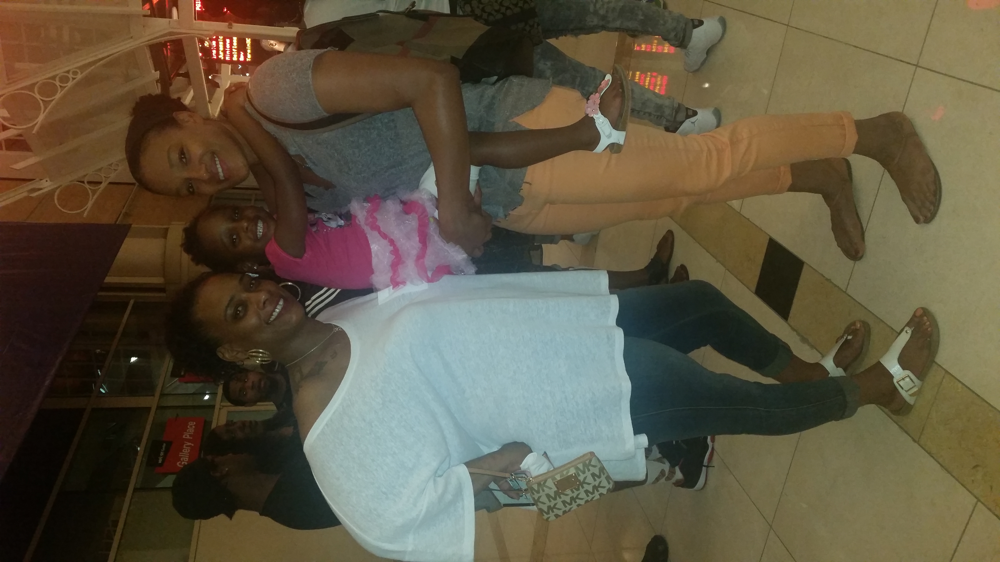
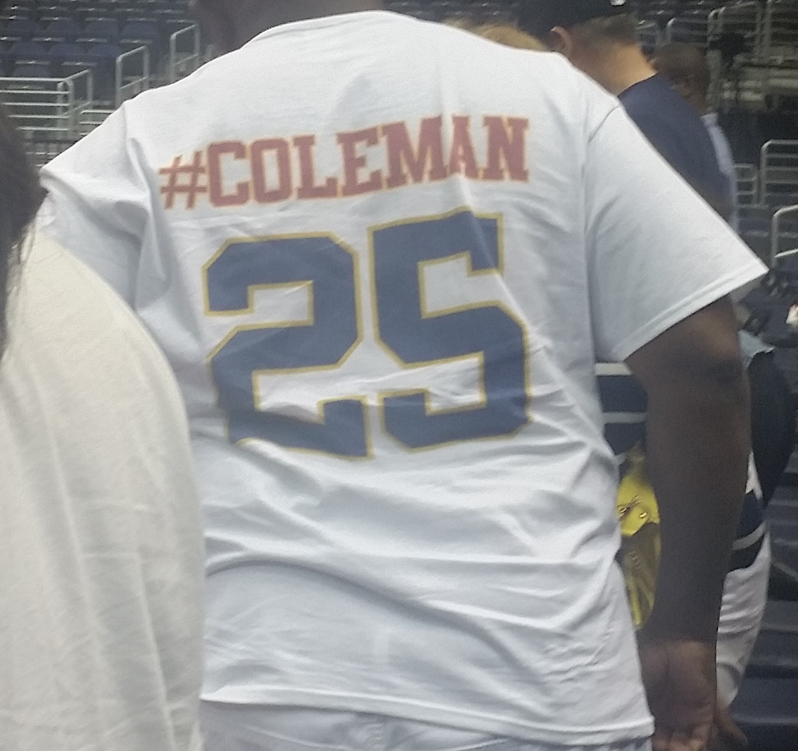
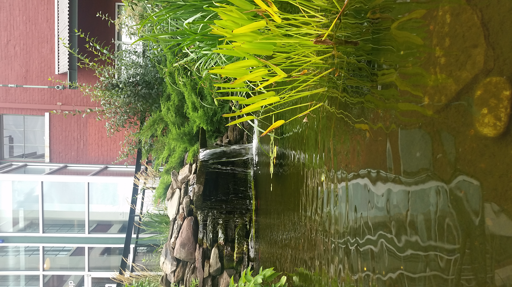
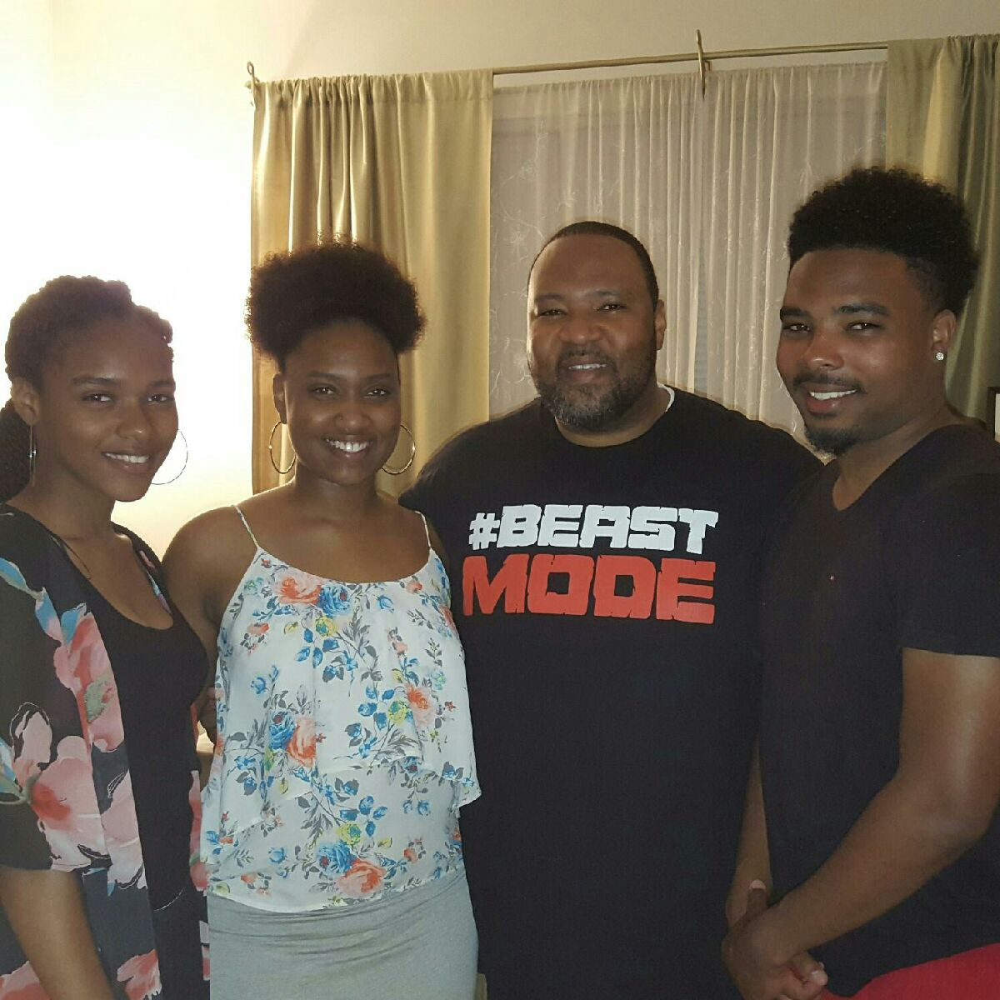
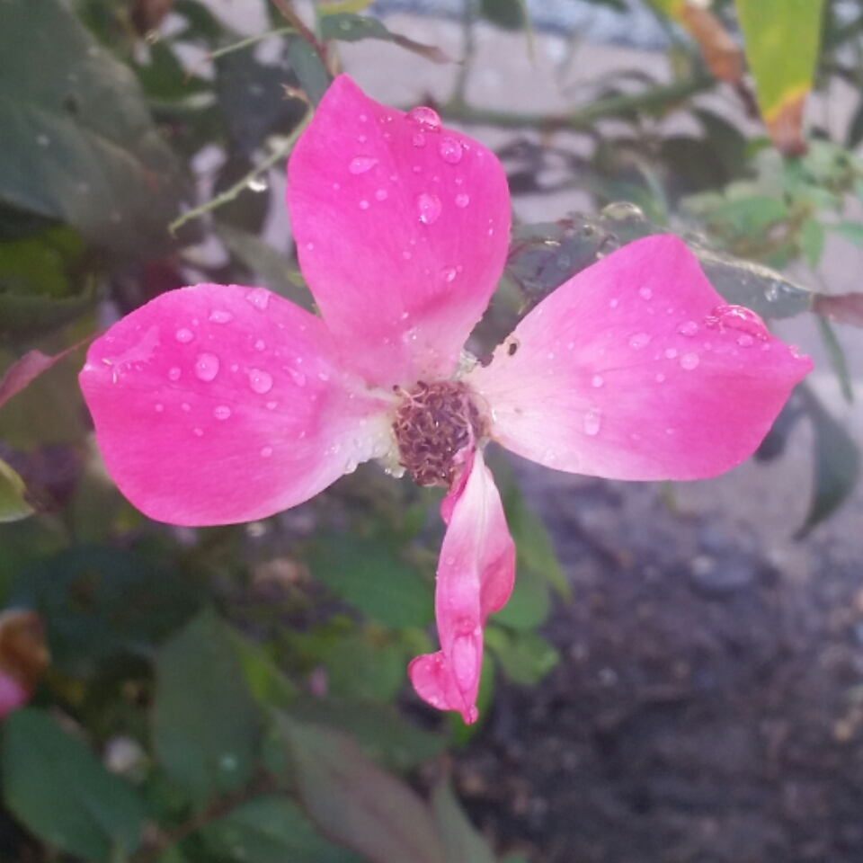

I enjoy Star Wars and the many versions people create of it.
This is my little sister Skylar. She gives me joyous strength everyday.
The World War II memorial I enjoy visiting with my dad in DC.
I enjoy taking pictures of nature and the many qualities it has when intergrated with unnatural things ike buildings.
My Aunt motivates me to work well because of how successful she has become through hard work and practice.
#25 was her jersey number in college before being drafted to The Mystics, which she now wears with Indiana Fever.
I enjoy taking pictures of nature and the many qualities it has when intergrated with unnatural things ike buildings.
I enjoy tatsing new things especially from places of interest like Korea. This is called tteokkbokki, fish cake covered in spicy tomato paste.
My father has inspired me to look towards security in computers and other technical medias.
From left to right: Myself, my sister, my father, my brother.
Taking pictures allows the viewer to capture any moment in time. Pictures, to me, are a way to encapsulate the beauty of nature and the items within it.
This is my beautiful mother who has always motivated me to be the best person I can be academically and socially.
Another beautiful picture of the WWII memorial I took my last year in DC.
 I enjoy taking pictures of nature and the many qualities it has when intergrated with unnatural things ike buildings.
I enjoy taking pictures of nature and the many qualities it has when intergrated with unnatural things ike buildings.